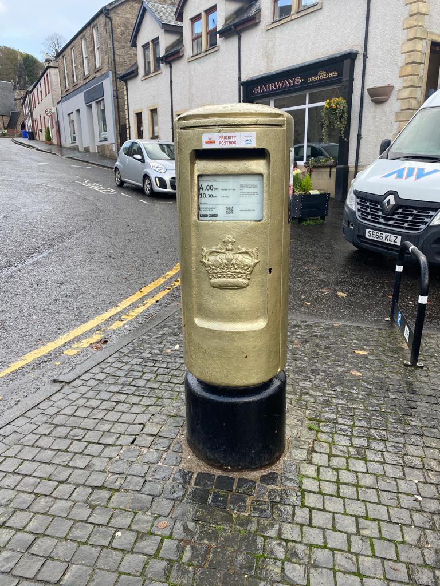

Local Attractions

Dunblane Cathedral
- The cathedral has been the focal part of Dunblane for centuries. Is one of Scotland's few surviving medieval churches and when viewed from the outside, the Cathedral looks impressive, but its true beauty lies within.
Dunblane Museum
- The Dunblane Museum houses a selection of artifacts, paintings, prints and photographs about the Cathedral and Dunblane. It also has one of the largest collections of Communion tokens. The Museum is located at The Cross in Dunblane, across the road from Dunblane Cathedral.

Golden Postbox
- Dunblane has its own golden post box to celebrate our gold medal winner Andy Murray. Andy won the gold in the mens singles tennis in London in 2012 and again in Rio in 2016. The postbox is found at the roundabout on High Street close to the Cathedral.
Leighton Library
- The Leighton Library is the oldest purpose-built library in Scotland. It was founded on the collection of Robert Leighton, Bishop of Dunblane, 1661-1670. In his will, Leighton left a sum of money for the building of the library. The library is found close to the Dunblane Cathedral.
Sheriffmuir
- The scene of the battle of Sheriffmuir 1715 can be observed by the obelisk monument to the Clan Macrae erected in 1915. A small walk from the monument is the Gathering Stone. The Gathering Stone is a block of grit, enclosed in an iron cage since 1840, where the standard of the Scottish clans is said to have been placed. If you carry along this road you will arrive at the Sheriffmuir Inn, a child-friendly hotel which is a lovely spot for lunch or dinner.

Allan Water
- Walk along the riverbank of the river Allan which runs through the middle of town. Paths can be accessed from the cathedral or either end of the bridge in the middle of the town centre.
David Stirling Monument
- David Stirling is known as the founder of the SAS. In 2002 a memorial statue was erected for him on the Hill of Row, near his family's estate at Park of Keir, Dunblane.